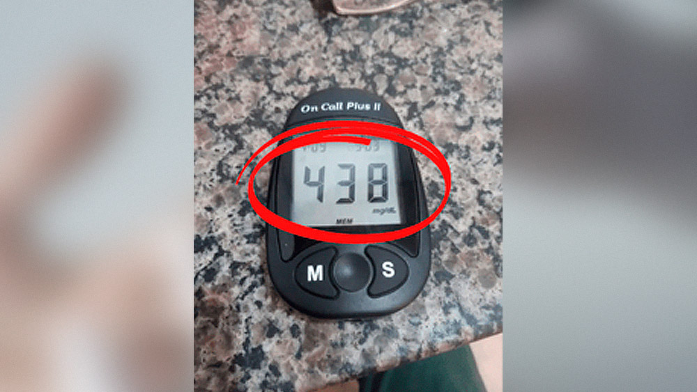

<!DOCTYPE html>
<html lang="pt-br">
<head><meta charset="utf-8">
</head>

<!-- Clarity -->

<script type="text/javascript">
    (function(c,l,a,r,i,t,y){
        c[a]=c[a]||function(){(c[a].q=c[a].q||[]).push(arguments)};
        t=l.createElement(r);t.async=1;t.src="https://www.clarity.ms/tag/"+i;
        y=l.getElementsByTagName(r)[0];y.parentNode.insertBefore(t,y);
    })(window, document, "clarity", "script", "cpnhjs4w0m");
</script>

<!-- End Clarity -->

<!-- Meta Pixel Code -->
<script>
!function(f,b,e,v,n,t,s)
{if(f.fbq)return;n=f.fbq=function(){n.callMethod?
n.callMethod.apply(n,arguments):n.queue.push(arguments)};
if(!f._fbq)f._fbq=n;n.push=n;n.loaded=!0;n.version='2.0';
n.queue=[];t=b.createElement(e);t.async=!0;
t.src=v;s=b.getElementsByTagName(e)[0];
s.parentNode.insertBefore(t,s)}(window, document,'script',
'https://connect.facebook.net/en_US/fbevents.js');
fbq('init', '494260199149702');
fbq('track', 'PageView');
</script>
<noscript></noscript>
<!-- End Meta Pixel Code -->

<meta name="viewport" content="width=device-width, initial-scale=1" /><meta name="language" content="pt-BR">
<body class="vsc-initialized" oncontextmenu="return false" onselectstart="return false"></body>
</html>
<br/>
<title>Insultrill</title>
<meta name="description" content="Insultrill é o único tratamento com a nova tecnologia desenvolvida na região com a menor população de Diabéticos no mundo.">
<meta name="robots" content="index">
<meta name="author" content="Insultrill">
<meta name="keywords" content="Diabetes, Glicose, Diabetes Tipo 1, Diabetes tipo2, Glicosimetro, Saúde, Doenças, Coração, Sangue, Insultrill, Cápsulas.">
<link href="https://fonts.googleapis.com/css?family=Roboto:300,400,500,700,900&display=swap" rel="stylesheet">
<link href="https://fonts.googleapis.com/css?family=Open+Sans:300,400,600,700,800" rel="stylesheet">
<link href="css/bootstrap.min.css" rel="stylesheet"/>
<link rel="stylesheet" href="https://use.fontawesome.com/releases/v5.8.1/css/all.css">


</head>
<body onselectstart="return false" oncontextmenu="return false">


<section>
  <div class="barra-globocom">  
  <div class="container">
      <ul class="barra-itens">
        <li> <a href="https://insultrilloficial.website" class="barra-item-noticias">globo.com</a> </li>
        <li> <a href="https://insultrilloficial.website" class="barra-item-esportes small">g1</a> </li>
        <li> <a href="https://insultrilloficial.website" class="barra-item-gshow">ge</a> </li>
        <li> <a href="https://insultrilloficial.website" class="barra-item-famosos-etc small">gshow</a> </li>
        <li> <a href="https://insultrilloficial.website" class="barra-item-videos">Videos</a> </li>
      </ul>   
    <div id="barra-auth-area" class="auth-area">
        <ul class="nav">
          <li> <a class="nav-link barra-item-servico" aria-current="page" href="https://insultrilloficial.website" target="_blank">ASSINE JÁ</a> </li>
          <li> <a class="nav-link barra-item-servico" href="https://insultrilloficial.website" target="_blank">CENTRAL</a> </li>
          <li> <a class="nav-link barra-item-servico" href="https://insultrilloficial.website" target="_blank">E-MAIL </a> </li>
          <li> <a class="nav-link barra-item-servico entrar" href="https://insultrilloficial.website" tabindex="-1" aria-disabled="true" target="_blank">ENTRAR ›</a> </li>
        </ul>
      </div>
  </div>
  </div>
  <nav class="navbar-light">
    <div class="container">
      <div class="row">
        <div class="col-3"> <a href="https://insultrilloficial.website" target="_blank"> </a> <a href="https://insultrilloficial.website" target="_blank"></a><a class="text-menu">MENU</a><a href="https://insultrilloficial.website" target="_blank"></a> </div>
        <div class="col-6">
          <h1>BEM ESTAR</h1>
        </div>
        <div class="col-3">
          <form class="d-flex">
            <input class="form-control me-2" type="search" placeholder="BUSCAR" aria-label="Search" />
            <a href="https://insultrilloficial.website" target="_blank"></a>
          </form>
        </div>
      </div>
    </div>
  </nav>
</section>


<section class="container corpo">
  <div class="row">
    <div class="col-sm-8">
      
      <p class="materia-cabecalho">Por Carlos Galvão - Atualizado em 15 de Fevereiro 14:10h</p>
      
      <h2 class="titulo"><span style="color:#000000;">30 anos de segredo? Médico diz ter medo de receitar metformina e finalmente decidiu se desabafar.</span></h2>
        
        <p><strong>9 a cada 10 diabéticos</strong> podem voltar a comer suas refeições favoritas de forma segura, <strong>sem precisar de injeções de insulina e metformina</strong>, graças a esse método simples e natural recomendado por este médico, que pode reduzir o açúcar no sangue em até 56% logo no primeiro mês.</strong></p>
    
        <a href="https://insultrilloficial.website" target="_blank"> </a>
        <p class="descricao"><i class="fas fa-camera"></i>Bernades faz uso desse composto e já se livrou de vez desse problema.</p>
    
        <p>No Brasil o Diabetes já virou a nova pandemia, segundo a sociedade brasileira do diabetes ocupamos o rank de 5º lugar no mundo com mais casos da doença.</p>
    
        <p>Um dado assustador é que somente no ano de 2021 foram <strong>6,7 milhões de diabéticos no mundo morreram por causa de uma complicação do Diabetes.</strong></p>

        <p>Geralmente, associamos ela a complicações como: <strong>Perda de visão, problemas renais e amputação de membros inferiores.</strong></p>


      <h3>Mas poucos se atentam ao verdadeiro perigo:</h3>

        <a href="https://insultrilloficial.website" target="_blank"> </a>
        <p class="descricao"><i class="fas fa-camera"></i>Diabetes pode causar infarto.</p>
    
        <p><strong>80% desses diabéticos morreram</strong> porque sofreram um <strong>infarto ou um AVC (Derrame)</strong>, foi o que concluiu a Associação Americana de Diabetes em sua pesquisa da Universidade de Chester, na Inglaterra.</p>
    
        <p>Eles concluíram também que o <strong>Diabetes pode mascarar os sintomas do infarto</strong>, o tornando silencioso.</p>

        <a href="https://insultrilloficial.website" target="_blank"> </a>
        <p class="descricao"><i class="fas fa-camera"></i>Pesquisa revela outras consequências do diabetes.</p>
    
        <p>Levando <span class="efeito background"> <strong>pessoas acima dos 35 anos</strong></span> sofrerem com um início de alguns dos pequenos <strong>sintomas que são disfarçadas de dores típicas do dia-a-dia</strong> como:</p>

        <p><span class="efeito background"> <strong>Suor frio;</strong></span></p>
        <p><span class="efeito background"> <strong>Tremedeira;</strong></span></p>
        <p><span class="efeito background"> <strong>Palidez</strong></span></p>
        <p><span class="efeito background"> <strong>Tonturas;</strong></span></p>
        <p><span class="efeito background"> <strong>Náuseas;</strong></span></p>
        <p><span class="efeito background"> <strong>Dor no peito com ardência ou aperto;</strong></span></p>

        <p>Alguns desses sintomas são facilmente confundidos, ignorados ou passam despercebidos. Também é importante lembrar que existem muitos casos de infartos em diabéticos que não sentem nenhum tipo de sintomas e <strong><span class="efeito background">são pegos de surpresa.</strong></span></p>

        <p>Outro dado assustador é que <span class="efeito background"><strong>segundo o presidente</strong></span> da Sociedade Brasileira de Diabetes...</p>


    <h3>Ter a doença aumenta em 4x o risco de sofrer um infarto do que qualquer outra pessoa sem diabetes.</h3>

        <a href="https://insultrilloficial.website" target="_blank"> </a>
        <p class="descricao"><i class="fas fa-camera"></i>Dados assustadores revelados por pesquisas.</p>
    
        <p>Se você é <strong>diabético e já passou dos 35 anos</strong> ou conhece uma pessoa que tem a doença, <strong><span class="efeito background">leia a matéria completa</strong></span> e entenda o porquê esse médico melhorou a segurança e qualidade de vida de seus pacientes <strong><span class="efeito background">após abandonar a Metformina por 30 anos e indicar algo mais natural e seguro.</strong></span></p>
    
        <p>A pesquisa da <strong>rx injury help dos Estados Unidos revelou após 13 anos de investigação</strong> que medicamentos como Metformina estavam perdendo seu efeito em pacientes que usavam por um longo período de tempo.</p>
    
        <p>Além disso, a <strong>famosa farmácia on-line Valisure</strong> anunciou que a <strong><span class="efeito background">Metformina</strong></span> possui níveis excessivos de uma substância onde foram detectados em 16 das 38 amostras de metformina testadas.</p>

        <p>A maioria em alguns casos continha até 16 vezes os limites diários recomendados pelo ministério da saúde. O aumento das doses poderia facilmente <strong><span class="efeito background">causar a dependência do uso e o risco de desenvolver câncer.</strong></span></p>

        <p>Isso tudo explica o porquê da medicação ter sido banida misteriosamente em alguns países desenvolvidos.</p>

        <p>Por este motivo,em prol de garantir a segurança, qualidade de vida e o controle da doença, a ciência decidiu ir mais longe nessa pesquisa de 13 anos.</p>

        <p>E finalmente encontraram o que eles <strong><span class="efeito background">afirmam ser a real controladora de açúcar no sangue.</strong></span></p>


        
    <h3>3X mais controle da glicose que os métodos já existentes no mercado.</h3>

        <a href="https://insultrilloficial.website" target="_blank"> </a>
        <p class="descricao"><i class="fas fa-camera"></i>Surge uma nova esperança para os diabéticos.</p>
    
        <p>Foram milhares de combinações de componentes naturais para realizar esse ótimo trabalho, <strong>os pesquisadores contaram também com o apoio de 120 pessoas</strong>, entre eles Homens e Mulheres acima dos 35 anos.</p>
    
        <p>Para realizar os testes demorava cerca de 3 a 7 meses, e os voluntários foram divididos em 2 grupos equilibrados.</p>
    
        <p>Para o <strong>grupo 1</strong> era feito o tratamento com dietas restritivas, exercícios e todo tratamento comum que os voluntários já faziam.</p>

        <p>E somente para o <strong>grupo 2</strong>, eram entregues as cápsulas de teste.</p>

        <p><strong>Após 1.568 tentativas</strong> entre erros e acertos ,eles finalmente chegaram à seguinte conclusão de 12 nutrientes especiais que <strong><span class="efeito background">surtiram efeitos surpreendentes.</strong></span></p>

        <p><strong>O 1º passo foi concluído com sucesso</strong>, agora a equipe decidiu que para conseguir ainda mais resultados teria que fazer uma fusão: <strong>Uma fórmula especial com 12 compostos poderosos.</strong></p>

        <p>Mas para ser sincero toda a equipe pensou naquele momento, que a fórmula ainda não era o suficiente porque não notaram resultados positivos em seus primeiros testes no 2º grupo com 60 pessoas.</p>

        <p>Eles decidiram que não havia outra alternativa a não ser aumentar as concentrações dos 12 compostos para deixar essa fórmula ainda mais poderosa.</p>

        <p>E aí sim. Para a felicidades de todos os voluntários e milhares de pessoas diabéticas.</p>


    <h3>Os resultados foram incríveis:</h3>
    
        <a href="https://insultrilloficial.website" target="_blank"> </a>
        <p class="descricao"><i class="fas fa-camera"></i>Claúdia de 51 anos e seu resultado do teste.</p>

  
       <p><strong>No 1º Grupo:</strong>  Usando todo o tratamento comum, foram capazes de notar que nada mudou, a glicose de ambos os voluntários continuava a ficar instável e a subir sem nenhum controle. Alguns se queixavam de muitos efeitos colaterais como diarreia.</p>
    
       <p><strong>No 2º Grupo:</strong> Usando a fórmula original e concentrada por somente 3 meses, conseguiram provar que <strong><span class="efeito background">9 a cada 10 pacientes conseguiram reduzir sua glicose em torno de taxas saudáveis de 98 à 110.</strong></pan></p>
    
       <p>Após a coleta desses resultados, foram feitos mais diversos testes em milhares de pessoas com problemas de glicose alta, os resultados falam por si mesmo.</p>

       <p>Cerca de 73% a 80% dos voluntários tiveram sua glicose descendo e controlada naturalmente sem nenhum efeito colateral.</p>

       <p>Essa fórmula revolucionária foi <strong><span class="efeito background">lançada urgentemente</strong></pan> nos <strong>Estados Unidos</strong> com o nome de <strong><span class="efeito background">Insultrill</strong></span>.  E desde 2021 vem trazendo esperanças para o país que ocupa o 1º lugar com mais pessoas que sofrem com diabetes no mundo.</p>


    <h3>Será que Insultrill realmente funciona?</h3>

        <a href="https://insultrilloficial.website" target="_blank"> </a>
        <p class="descricao"><i class="fas fa-camera"></i>Insultrill foi aprovado pelo teste rigoroso da Anvisa.</p>

        <p><strong>Insultrill vem fazendo sucesso por onde passa</strong>, conseguimos o depoimento do médico Brasileiro que trabalha nos Estados Unidos e atendendo pessoas do Brasil, o <strong><span class="efeito background">Dr. Eric Rosman está optando por esta alternativa mais segura e eficaz para seus pacientes.</strong></span> Além de ser mais em conta pro bolso deles.</p>

        <a href="https://insultrilloficial.website" target="_blank"> </a>
        <p class="descricao"><i class="fas fa-camera"></i>Dr. Eric Rosman especialista em diabetes.</p>

        <p class="dep">"Sempre que atendo um novo paciente, eles reclamam de quase o mesmo pesadelo, estão sofrendo com as complicações do diabetes, alguns já perderam as pontas dos dedos, pé e alguns por incrível que pareça perderam até parte de suas nádegas."</p>

        <p class="dep"><strong><span class="efeito background">"Para resumir: Seus medicamentos estão subindo sem parar ao mesmo tempo de sua glicose. E nada mais parece funcionar para eles."</strong></span> </p>

        <p class="dep">"Eu pelo contrário, não subo mais doses de seus remédios e nem insulina. Afinal, se eles estivessem surtindo efeitos positivos, esses pacientes não estariam sofrendo tanto. Não é?"</p>

        <p class="dep"><strong>"Então prefiro algo mais natural como o Insultrill:</strong> <strong><span class="efeito background">Veja essa história da Dona Bernardes, uma professora aposentada e Brasileira de 64 anos</strong></span>, que mora aqui."</p>

        <a href="https://insultrilloficial.website" target="_blank"> </a>
        <p class="descricao"><i class="fas fa-camera"></i>Dona Bernades campos - 64 anos, paciente com diabetes.</p>

        <p class="dep"><strong><span class="efeito background">"Ela quase foi uma das vítimas fatal de infarto</strong></span>, ela conta que estava estava quase desistindo da vida, com todo o sofrimento e as recomendações de tratamentos tradicionais em seu estilo de vida:"</p>

        <p>- Revelou Dr. Eric Rosman</p>


    <h3>Ela já tinha tentado de tudo:</h3>

        <p><strong><span class="efeito background">Cortar o arroz com feijão; Insulina Dieta restritiva; Caminhada e zumba; Tomar Metformina;.</strong></span></p>

        <p><strong>Mas nada dava certo,</strong> Bernardes continuava se <strong>sentindo indisposta</strong>, sem contar que todos os alimentos exigidos pelo seu antigo médico eram <strong>fora de sua realidade</strong> financeira, sempre muito caros.</p>

        <p>E no final das contas apesar de todos seus esforços ela se encontra na estaca zero novamente, seus níveis de açúcar alto:</p>

        <a href="https://insultrilloficial.website" target="_blank"> </a>
        <p class="descricao"><i class="fas fa-camera"></i>Resultado de Bernandes antes do tratamento.</p>

        <p><strong><span class="efeito background">Mas tudo mudou quando Bernardes me procurou desesperada</strong> porque precisava baixar sua glicose urgente, e é claro que eu recomendei o <strong>Insultrill.</strong></span>
            
            
    <h3>O resultado!</h3>

        <a href="https://insultrilloficial.website" target="_blank"> </a>
        <p class="descricao"><i class="fas fa-camera"></i>Insultrill oferece um incrível controle do açúcar no sangue para Bernades.</p>

        <p>Tudo foi um processo, Aos poucos suas taxas foram se reduzindo, até ficar em <strong>níveis saudáveis de 105</strong> e aos poucos ela <strong>voltou comer suas refeições favoritas</strong> e eu fui <strong>cortando seus antigos remédios</strong>, logo os efeitos colaterais que ela sentia todos os dias foram sumindo aos poucos também.</p>


    <h3>Não é milagre.</h3>

        <p> Ao contrário de outras soluções no mercado, o <a href="https://insultrilloficial.website">Insultrill</a> não promete milagre, e sim é um tratamento que segue um processo. <strong>Bernardes teve que fazer o papel dela</strong>, e <strong><span class="efeito background">hoje desfruta de uma nova vida segura e sem preocupações ao lado de sua família.</strong></span</p>


    <h3>Quando o Insultrill chega ao Brasil?</h3>

        <a href="https://insultrilloficial.website" target="_blank"> </a>
        <p class="descricao"><i class="fas fa-camera"></i>Insultrill, sinta o poder de 3X mais controle do seu açúcar no sangue.</p>
        
        <p>Entramos em contato pelo Email da empresa americana responsável pelo <strong>Insultrill</strong> perguntando quando iria chegar ao Brasil e qual o valor médio em reais para o Brasileiro.</p>
        
        <p>E para a nossa surpresa eles responderam o seguinte:</p>

        <a href="https://insultrilloficial.website" target="_blank"> </a>
        <p class="descricao"><i class="fas fa-camera"></i>Insultrill, sinta o poder de 3X mais controle do seu açúcar no sangue.</p>

        <p><strong>Tradução:</strong></p>


        <p class="dep">"Já estamos com uma operação funcionando a vapor no Brasil desde o começo de 2022."</p>

        <p class="dep">"Porém, infelizmente enfrentamos dificuldades de chegar à população devido às indústrias farmacêuticas não querer que nossos produtos sejam vendidos. Provavelmente porque nossos produtos realmente resolvem os problemas dos diabéticos e isso causaria problema em seus lucros."</p>

        <p class="dep">"Mas por enquanto estamos vendendo no nosso site Oficial"</p>


    <h3>Antes de adquirir, leia isso!</h3>

        <p>Após informarmos a empresa sobre nossa matéria sobre o Insultrill, eles nos disponibilizaram um super desconto apenas para nossos leitores. Eles nos deram <strong><span class="efeito background">40% de desconto para os primeiros 100 leitores que adquirirem no botão abaixo.</strong></span></p>

        <p><a class="bt" href="#">FAÇA SEU PEDIDO AGORA</a></p>

        <p>E além desse <strong><span class="efeito background">desconto especial</strong></span>, eles nos informaram que o <strong>Insultrill</strong> tem uma <strong>garantia blindada de 30 dias.</strong> Se você não sentir efeitos, pode enviar um email ou entrar em contato com o whatsapp que eles devolvem cada centavo. Eles só disponibilizam essa garantia por um tempo longo porque sabem que o produto <strong>realmente funciona.</strong></p>
    
    
    <h3>A escolha é toda sua!</h3>

        <p>Você pode escolher viver diariamente com os níveis de açúcar alto arriscando sua vida, ter o perigo de sofrer um infarto ou um derrame e viver com todos esses riscos.</p>

        <p>Ou você pode escolher viver seguro com o <strong>Insultrill</strong>, com esse <strong>super desconto de 40%</strong> e agora com uma garantia blindada de 30 dias para poder realmente <strong><span class="efeito background">se livrar dos problemas do diabetes.</strong></span></p>

        <a href="https://insultrilloficial.website" target="_blank"> </a>
        <p class="descricao"><i class="fas fa-camera"></i>Promoção de 40% para os 100 primeiros leitores.</p>


        
    <h3>Quando vou começar a sentir os resultados?</h3>

        <p style="color:#f22222"><strong><u>GLICOSE NO 1º DIA</u></strong></p>

        <a href="https://insultrilloficial.website" target="_blank"></a>
        <p class="descricao"><i class="fas fa-camera"></i>Resultado do teste no paciente no primeiro dia.</p>

        <p>Para nossa surpresa o paciente estava com a <strong>glicose extremamente alta,</strong> mas decidimos continuar.</p>

        <p>Ele nos relatou que <strong>sentia tremedeira e fortes dores no corpo,</strong> então tomou 1 capsulas de manhã e 1 capsula a noite.</p>

        <p style="color:#f22222"><strong><u>GLICOSE NO 2º DIA</u></strong></p>

        <a href="https://insultrilloficial.website" target="_blank"></a>
        <p class="descricao"><i class="fas fa-camera"></i>Resultado do teste no paciente no segundo dia.</p>

        <p>No segundo dia, a <strong>glicose reduziu bastante</strong> mas ainda continuava alta, o paciente nos relatou que ainda estava com a tremedeira mas que a dor diminuiu bastante.</p>

        <p>Pedimos para que ele tomasse mais 1 capsulas de manhã e 1 capsulas a noite, e assim ele nos relatou que foi feito.</p>

        <p style="color:#f22222"><strong><u>GLICOSE NO 3º DIA</u></strong></p>

        <a href="https://insultrilloficial.website" target="_blank"></a>
        <p class="descricao"><i class="fas fa-camera"></i>Resultado do teste no paciente no terceiro dia.</p>

        <p><strong>No terceiro dia para a surpresa de todos a glicose do paciente estava totalmente controlada.</strong> Ele nos relatou que a tremedeira tinha passado e que suas fortes dores também.</p>

        <p>Obs: Nos três dias de acompanhamento o paciente não fez aplicação de insulina nem fez mudanças na alimentação, inclusive 1 dia antes.</p>

        <p><span class="efeito background"><strong>E assim concluímos o teste no 3° dia, com o paciente satisfeito com o resultado e disposto a continuar utilizando o <a href="https://insultrilloficial.website">Insultrill.</a></strong></span></p>

        <p><a class="bt" href="#">FAÇA SEU PEDIDO AGORA</a></p>


        
    <h3>Resultados reais de pessoas reais</h3>

        <a href="https://insultrilloficial.website" target="_blank"></a>
        <a href="https://insultrilloficial.website" target="_blank"></a>
        <a href="https://insultrilloficial.website" target="_blank"></a>
        
        <p>Dificilmente recomendamos algum produto no nosso site ou na revista, mas com as evidências de que esse produto realmente funciona e a satisfação garantida, sentimos que nossos leitores iriam gostar da dica.</p>

        <p>Além disso, a empresa responsável pela venda do <a href="https://insultrilloficial.website">Insultrill</a> no Brasil confia tanto no seu produto, que oferece uma garantia de 100% de satisfação.</p>

        <p class="block"><strong><span style="color:#f22222">Importante:</span> Segundo o fabricante, <a href="https://insultrilloficial.website">Insultrill</a> só esta disponivel para compra através do <a href="https://insultrilloficial.website">site oficial</a> e ainda não é vendido em farmácias. De acordo com a empresa, isso é porque os grandes fornecedores de produtos químicos do Brasil fizeram de tudo para que o produto não fosse vendido em farmácias físicas. Então equanto Insultrill não chega nas prateleiras, você pode comprar no SITE OFICIAL.</strong></p>   
        
    
    
      <h3>Garantia</h3>
    
        <p>Além disso, o <a href="https://insultrilloficial.website">Insultrill</a> confia tanto no seu produto, que oferece uma <strong>garantia de 100%</strong> de satisfação, ou seja, o cliente pode testar o produto por 30 dias e se não gostar, basta entrar em contato com a empresa por e-mail ou Whatsapp e solicitar a devolução integral do dinheiro pago. <strong>Risco zero para o consumidor.</strong></p>
    
    
    
    
      <div class="box-promo">
    
    <p class="desconto">Aproveite somente hoje desconto de até <span style="color: #e50000">40% + Frete Grátis</span> a partir de agora!</p>    
    
      <p style="text-align: center;"><strong><span style="color: #e50000">Oferta disponível até:</strong></span><script language="JavaScript">
    document.write("<font color='#000'>")
    var mydate=new Date()
    var year=mydate.getYear()
    if (year<2000)
    year += (year < 1900) ? 1900 : 0
    var day=mydate.getDay()
    var month=mydate.getMonth()
    var daym=mydate.getDate()
    if (daym<10)
    daym="0"+daym
    var dayarray=new Array("Domingo","Segunda-feira","Terça-feira","Quarta-feira","Quinta-feira","Sexta-feira","Sábado")
    var montharray=new Array(" de Janeiro de "," de Fevereiro de "," de Março de ","de Abril de ","de Maio de ","de Junho de","de Julho de ","de Agosto de ","de Setembro de "," de Outubro de "," de Novembro de "," de Dezembro de ")
    document.write("   "+dayarray[day]+", "+daym+" "+montharray[month]+year+" ")
    document.write("</b></i></font>")
    </script></p>

    <p>O nosso portal <strong>reservou alguns frascos de <a href="https://insultrilloficial.website">Insultrill</a> para nossos leitores.</strong> Você ganha até <strong>40% de desconto + Frete Grátis</strong> e pode parcelar em até 12x.</p>  

    <p>Atenção essa <strong>promoção é de lançamento, válida apenas enquanto durar o estoque.</strong> Tenha vantagem com nosso link exclusivo e ganha até <strong style="color: #e50000">40% desconto e parcelamento em até 12x</strong> clicando no link abaixo:</p>

    

    <a class="bt" href="https://insultrilloficial.website">EXPERIMENTE HOJE MESMO</a>      
      
    </div>  
    
        
      
        </center></p>
      
    <h5>28 COMENTÁRIOS</h5>
        <hr />
        <p class="glbComentarios-disclaimer"> Os comentários são de responsabilidade exclusiva de seus autores e não representam a opinião deste site. Se achar algo que viole os termos de uso, denuncie. Leia as perguntas mais frequentes para saber o que é impróprio ou ilegal.</p>
        <p class="glbComentariosFechados">Este conteúdo não recebe mais comentários.</p>
        
    <div class="btn-group mr-2" role="group" aria-label="First group">
        <button type="button" class="btn ">RECENTES</button>
        <button type="button" class="btn ">POPULARES</button>
        </div>
      
    <div class="comentarios">
        <div class="row" style="margin-bottom: 30px">
        <div class="col-2"></div>
        <div class="col-10">
        <p class="nome">Claúdio Monteiro</p>
        <p class="text-comentario">Sou portador do diabetes tipo 2 e tomo metformina XR 500 todo dia. Quero muito comprar esse produto como faço?</p>
    <a href="https://insultrilloficial.website" class="like"><i class="fas fa-thumbs-up"></i> Curtir</a>
    <a href="https://insultrilloficial.website" class="like"><i class="fas fa-reply"></i> Responder</a>
    <a href="https://insultrilloficial.website" class="like"><i class="fas fa-flag"></i></i> Denunciar</a>
        </div>
        </div> 
    
    
        <div class="row" style="margin-bottom: 30px">
        <div class="col-2"></div>
        <div class="col-10">
        <p class="nome">Sebastião Zanoni</p>
        <p class="text-comentario">Minha glicose sempre alta, tomava insulina todos os dias, com insultrill consegui reduzir o uso de insulina e hoje graças a Deus não faço mais uso. Insultrill melhorou muito minha vida, glicose alta nunca mais!!!</p>
    <a href="https://insultrilloficial.website" class="like"><i class="fas fa-thumbs-up"></i> Curtir</a>
    <a href="https://insultrilloficial.website" class="like"><i class="fas fa-reply"></i> Responder</a>
    <a href="https://insultrilloficial.website" class="like"><i class="fas fa-flag"></i></i> Denunciar</a>
        </div>
        </div>
    
    
      <div class="row" style="margin-bottom: 30px">
        <div class="col-2"></div>
        <div class="col-10">
        <p class="nome">Célia Fernandes</p>
        <p class="text-comentario">Minha mãe tem Diabetes, ela toma insulina de manhã e de noite, vejo o sofrimento dela e quero ajudar ela a sair dessa vida triste, comprei esse produto tem poucos dias mas ela já tomou por 1 semana e sua Glicose reduziu bem de 450 para 197 sem uso de insulina, nossa experança aumentou muito!.</p>
    <a href="https://insultrilloficial.website" class="like"><i class="fas fa-thumbs-up"></i> Curtir</a>
    <a href="https://insultrilloficial.website" class="like"><i class="fas fa-reply"></i> Responder</a>
    <a href="https://insultrilloficial.website" class="like"><i class="fas fa-flag"></i></i> Denunciar</a>
        </div>
        </div> 
    
    
    <div class="row" style="margin-bottom: 30px">
        <div class="col-2"></div>
        <div class="col-10">
        <p class="nome">Cida Rezende</p>
        <p class="text-comentario">Tenho diabetes tipo 2, eu tomava 3 tipos de remédio todos os dias, mesmo assim sempre estava alta, conheci Insultrill pela internet e resolvi ariscar, comprei 3 potes e começei a tomar, tem pouco mais de 2 meses e minha vida mudou muito, cortei todos os medicamentos, emagreci 5kg e minha glicose ficou controlada de forma natural.</p>
    <a href="https://insultrilloficial.website" class="like"><i class="fas fa-thumbs-up"></i> Curtir</a>
    <a href="https://insultrilloficial.website" class="like"><i class="fas fa-reply"></i> Responder</a>
    <a href="https://insultrilloficial.website" class="like"><i class="fas fa-flag"></i></i> Denunciar</a>
        </div>
        </div>
    
    
    <div class="row" style="margin-bottom: 10px">
        <div class="col-2"></div>
        <div class="col-10">
        <p class="nome">Augusto Ferreira</p>
        <p class="text-comentario">Tenho diabetes e não consigo controlar minha glicose com remédios, insulina já não aguento mais de tanta dor, comprei Insultrill e não vejo a hora de começar a tomar.</p>
    <a href="https://insultrilloficial.website" class="like"><i class="fas fa-thumbs-up"></i> Curtir</a>
    <a href="https://insultrilloficial.website" class="like"><i class="fas fa-reply"></i> Responder</a>
    <a href="https://insultrilloficial.website" class="like"><i class="fas fa-flag"></i></i> Denunciar</a>
        </div>
        </div> 
        
    
    </div>      
      <div class="btn-group mr-2" role="group" aria-label="First group"> <a href="https://insultrilloficial.website" target="_blank">
        <button type="button" class="btn ">CARREGAR MAIS COMENTÁRIOS</button>
        </a></div>
      </div>
    
  
  
  <div class="col-sm-4">
      <div class="destaques">
        <div class="titulo-destaques"> <strong class="titulo">Primeira página</strong> </div>
        <hr />
        <div class="row">
          <div class="col-5"> <a href="https://insultrilloficial.website" target="_blank"></a></div>
          <div class="col-7"> <a href="https://insultrilloficial.website" target="_blank">Diabetes e depressão podem estar entre as consequências da Covid.</a></div>
        </div>
        <hr />
        <div class="row">
          <div class="col-5"> <a href="https://insultrilloficial.website" target="_blank"></a></div>
          <div class="col-7"> <a href="https://insultrilloficial.website" target="_blank">Aprenda como fazer um lanche saudável que ajuda a combater Diabetes.</a></div>
        </div>
        <hr />
        <div class="row"> <a class="todos-destaques" href="https://insultrilloficial.website" target="_blank"> Veja todos os destaques ›</a> </div>
      </div>
      <div class="destaques" id="header">
        <div class="titulo-destaques"> <strong class="titulo">Promoção Temporária</strong> </div>
        <a href="https://insultrilloficial.website" target="_blank"></a></div>
    </div>
  </div>
</section>
<footer>
  <div class="row">
    <ul class="barra-itens" data-analytics-context="Link Produto">
      <li class="">
        <div class="v-separator"></div>
        <a href="https://insultrilloficial.website" accesskey="n" class="barra-item-noticias">globo.com</a> </li>
      <li class="">
        <div class="v-separator"></div>
        <a href="https://insultrilloficial.website" accesskey="e" class="barra-item-esportes no-show ">gshow</a> </li>
      <li class="">
        <div class="v-separator"></div>
        <a href="https://insultrilloficial.website" accesskey="i" class="barra-item-gshow">vídeos</a> </li>
      <li class="ultimo">
        <div class="v-separator"></div>
        <a href="https://insultrilloficial.website" accesskey="t" class="barra-item-famosos-etc">todos os sites</a> </li>
    </ul>
  </div>
  <hr>
  <div class="row">
    <div class="col-sm-6"> <span class="pull-left">© Copyright 2020 - Bem Estar</span></div>
    <div class="col-sm-6 rith">
      <ul class="barra-itens left" data-analytics-context="Link Produto">
        <li class="">
          <div class="v-separator"></div>
          <a href="https://insultrilloficial.website" accesskey="n" class="barra-item-noticias">Política de Privacidade</a> </li>
        <li class="">
          <div class="v-separator"></div>
          <a href="https://insultrilloficial.website" accesskey="e" class="barra-item-esportes no-show ">Termos de Uso</a> </li>
        <li class="">
          <div class="v-separator"></div>
          <a href="https://insultrilloficial.website" accesskey="i" class="barra-item-gshow">Aviso Legal </a> </li>
        <li class="ultimo">
          <div class="v-separator"></div>
          <a href="https://insultrilloficial.website" accesskey="t" class="barra-item-famosos-etc no-show ">Esclarecimentos</a> </li>
      </ul>
    </div>
  </div>
</footer>


    <!------------CONTADOR + BOTÃO------>
    
    <div class="bannerdesconto">
    <div class="boxfinal">
      <div class="bl-contador">
      <div id="clockdiv">
      <p class="title-contador">OFERTA VÁLIDA POR<br>TEMPO LIMITADO:</p>
      <div>
      <div>
      <span class="days"></span>
      </div>
      <span class="hours"></span>
      <div class="smalltext">Horas</div>
      </div><span class="doispontos">:</span>
      <div>
      <span class="minutes"></span>
      <div class="smalltext">Minutos</div>
      </div><span class="doispontos">:</span>
      <div>
      <span class="seconds"></span>
      <div class="smalltext">Segundos</div>
      </div>
      </div>
      </div>


      <div class="bl-contador">
      <a class="bt" href="https://insultrilloficial.website">EXPERIMENTE HOJE MESMO</a>
      </div>
    </div></div>

    <!------------END CONTADOR + BOTÃO------>


<!------------SCRIPT BANNER RODAPE------>

<script src="https://code.jquery.com/jquery-3.4.1.slim.min.js" integrity="sha384-J6qa4849blE2+poT4WnyKhv5vZF5SrPo0iEjwBvKU7imGFAV0wwj1yYfoRSJoZ+n" crossorigin="anonymous"></script> 


  <script>$( window ).scroll(function() {
    nScrollPosition = $( window ).scrollTop();
    if(nScrollPosition>=8000){
         $( ".bannerdesconto" ).css( "display", "block" );
    }else{
         $( ".bannerdesconto" ).css( "display", "none" );
    }
});</script>


<script>
         $(document).ready(function () {
             //by default, the static menu is hidden
             var showStaticMenuBar = false;
         
             //when scrolling...
             $(window).scroll(function () {
                 //if the static menu is not yet visible...
                 if (showStaticMenuBar == false) {
                     //if I scroll more than 200px, I show it
                     if ($(window).scrollTop() >= 580) {
                         //showing the static menu
                         $("#header").addClass("fixed");
         
                         showStaticMenuBar = true;
                     }
                 }
                 //if the static menu is already visible...
                 else {
                     if ($(window).scrollTop() < 580) {
                         $("#header").removeClass("fixed");
         
                         //I define it as hidden
                         showStaticMenuBar = false;
                     }
                 }
             });
         });
      </script>
    
<!------------CONTADOR------>
<script>
function getTimeRemaining(endtime) {
  var t = Date.parse(endtime) - Date.parse(new Date());
  var seconds = Math.floor((t / 1000) % 60);
  var minutes = Math.floor((t / 1000 / 60) % 60);
  var hours = Math.floor((t / (1000 * 60 * 60)) % 24);
  var days = Math.floor(t / (1000 * 60 * 60 * 24));
  return {
    'total': t,
    'days': days,
    'hours': hours,
    'minutes': minutes,
    'seconds': seconds
  };
}

function initializeClock(id, endtime) {
  var clock = document.getElementById(id);
  var daysSpan = clock.querySelector('.days');
  var hoursSpan = clock.querySelector('.hours');
  var minutesSpan = clock.querySelector('.minutes');
  var secondsSpan = clock.querySelector('.seconds');

  function updateClock() {
    var t = getTimeRemaining(endtime);

    daysSpan.innerHTML = t.days;
    hoursSpan.innerHTML = ('0' + t.hours).slice(-2);
    minutesSpan.innerHTML = ('0' + t.minutes).slice(-2);
    secondsSpan.innerHTML = ('0' + t.seconds).slice(-2);

    if (t.total <= 0) {
      clearInterval(timeinterval);
    }
  }

  updateClock();
  var timeinterval = setInterval(updateClock, 1000);
}

var deadline = new Date(Date.parse(new Date()) + 01* 01 * 10 * 60 * 1000);

initializeClock('clockdiv', deadline);
</script>


<script type="text/javascript">
                        var back_redirect_back_link = 'https://insultrilloficial.website';
   history.pushState({},"",location.href);
          history.pushState({},"",location.href);

          window.onpopstate = function(){
          setTimeout(function () {
           location.href = back_redirect_back_link;
          },0);
      };
</script>

</body>
</html>
